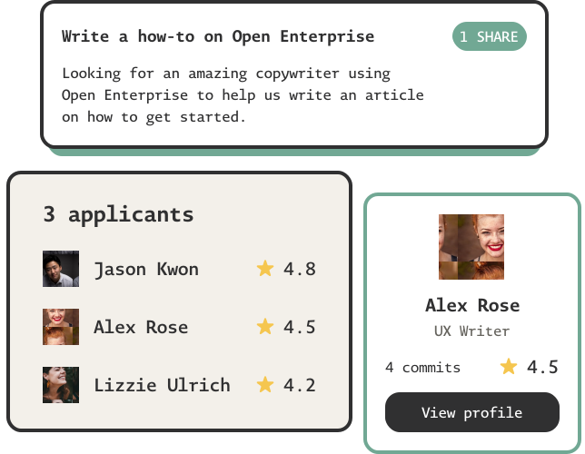

Open Enterprise
Why Open Enterprise
Features
Contribute
Request early access
A new model for open collaboration
Run an organization where members get rewarded for their contributions with fractional
ownership.
Reimagining what it means to work
Teams and communities using Open Enterprise fundamentally unlock a reality of work that reimagines
how people engage in economic opportunity, meeting the demands and expectations of a modern
organization.

Modern workforce
Multistakeholder governance aligns employees with the organization’s wider community.

Meritocratic by design
Tokenized ownership aligns deeply committed individuals with the organization’s success.

Engineered for resilience
Open Enterprise supports best practices in sociocratic management.

Kickstart an organization with your co-founders
It’s the early days, you just had a long conversation with two friends about a meaningful
challenge that you’re all passionate about and have a potential solution for. You’re ready to
embark the startup journey.


Onboard users, investors and advisors as you grow
You’ve bootstrapped and delivered an MVP, and some investors and advisors are interested in
having a chat with you. As an Open Enterprise, you can onboard them seamlessly into your digital
organization and align them with your success.


Engage highly committed contributors
You need talented people on-demand across various tasks that your full-time workforce can’t
prioritize at the moment. As an Open Enterprise, you can easily fund tasks and have people apply
to work on them in return for funds or shares.

Help us improve Open Enterprise
As an Open Enterprise ourselves, we are actively looking for new talent to join our mission of
improving and delivering the Open Enterprise model to the world. Apply for open tasks and earn a
stake in our success.
Ideate a list of features based on the Sociocracy model
We’re looking for someone interested in business theory and research that’ll help us bridge the
gap between our s...
Apply by May 15
Ideate a list of features based on the Sociocracy model
We’re looking for someone interested in business theory and research that’ll help us bridge the
gap between our s...
Apply by May 15
Ideate a list of features based on the Sociocracy model
We’re looking for someone interested in business theory and research that’ll help us bridge the
gap between our s...
Apply by May 15
Start an Open Enterprise
If you can’t wait to run a new or existing organization on Open Enterprise and are willing to explore and navigate the beta, we’d love to get you started.